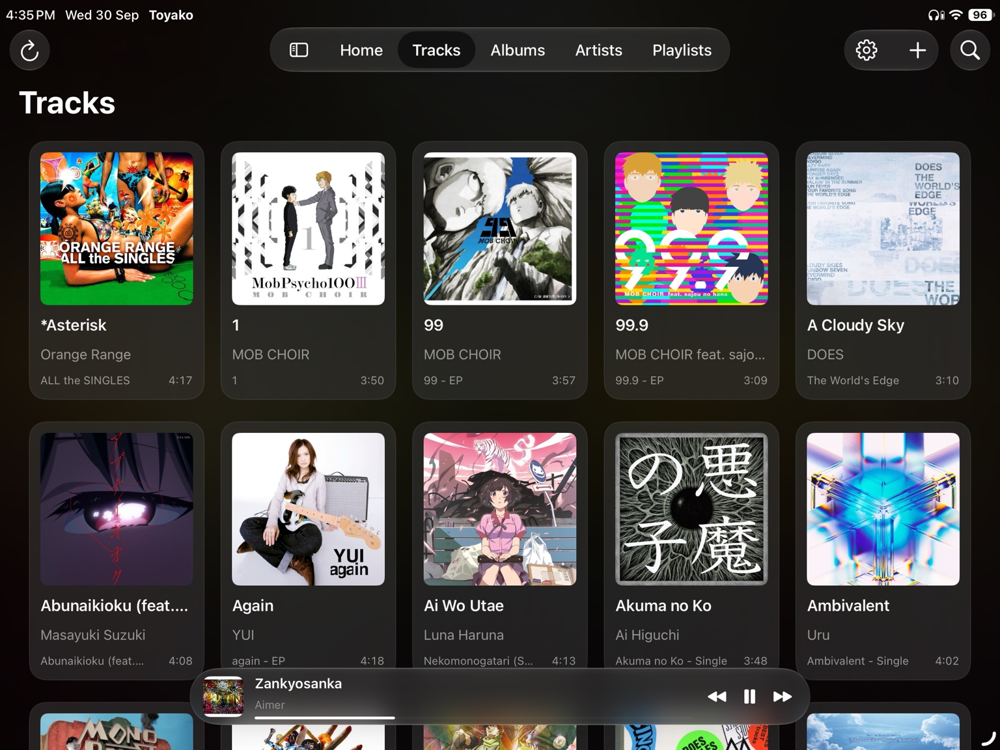
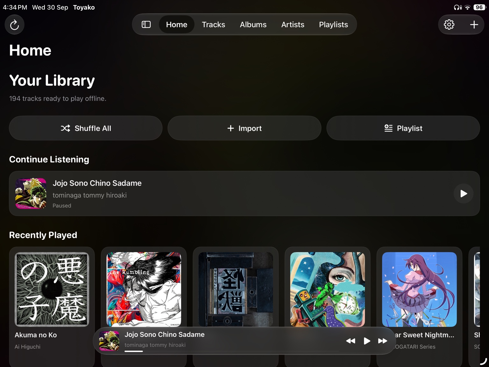
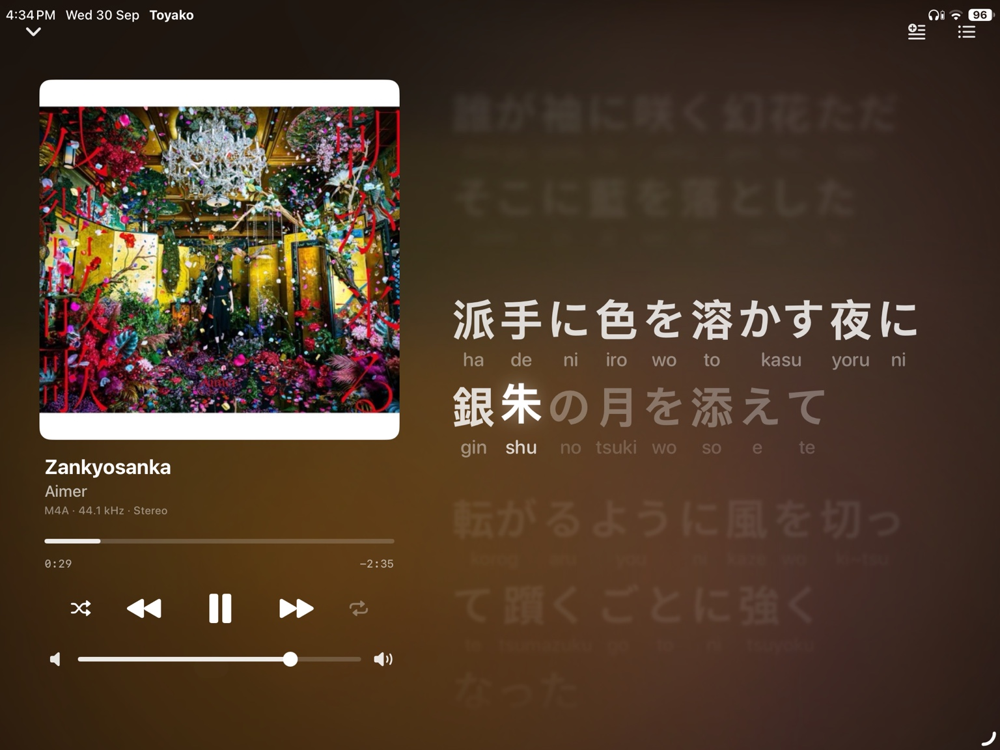
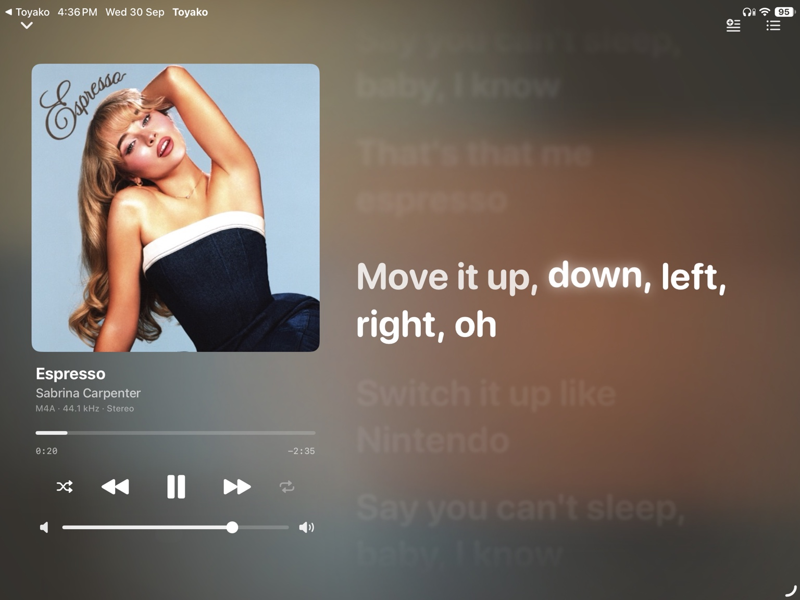
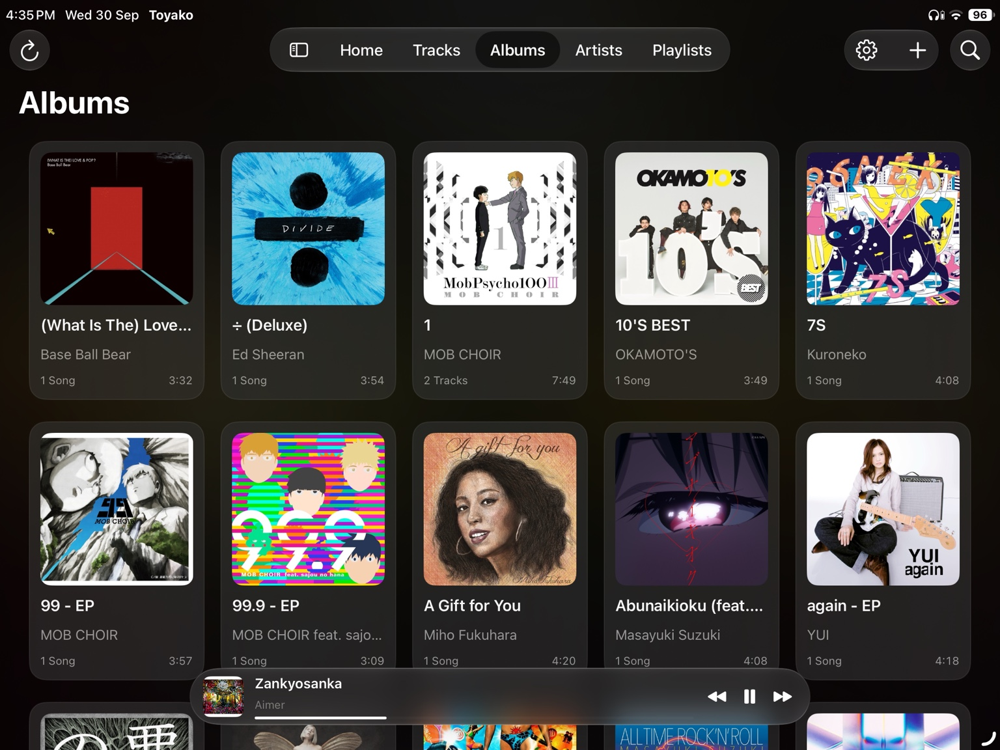
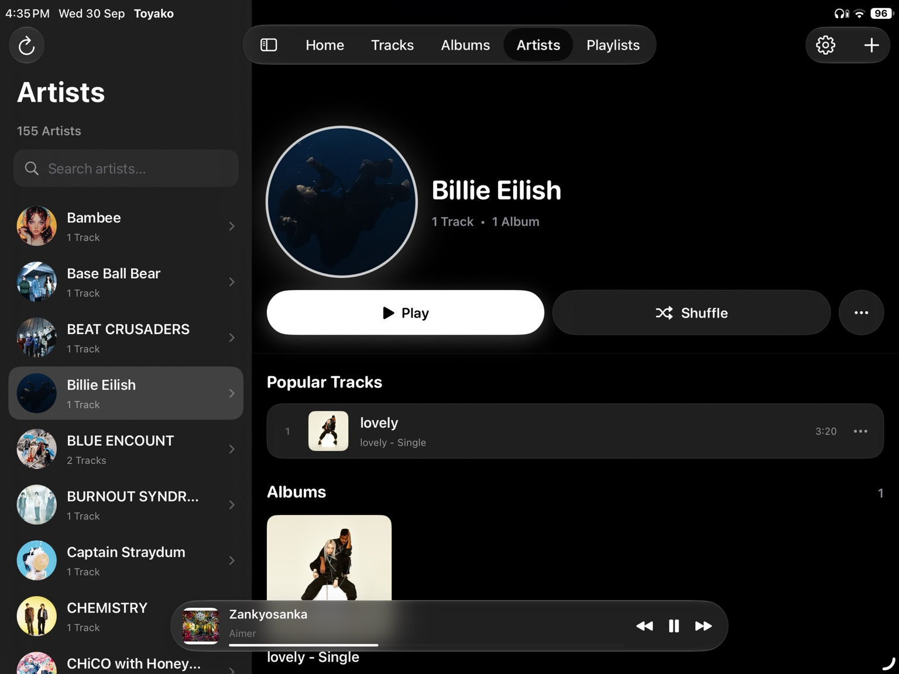
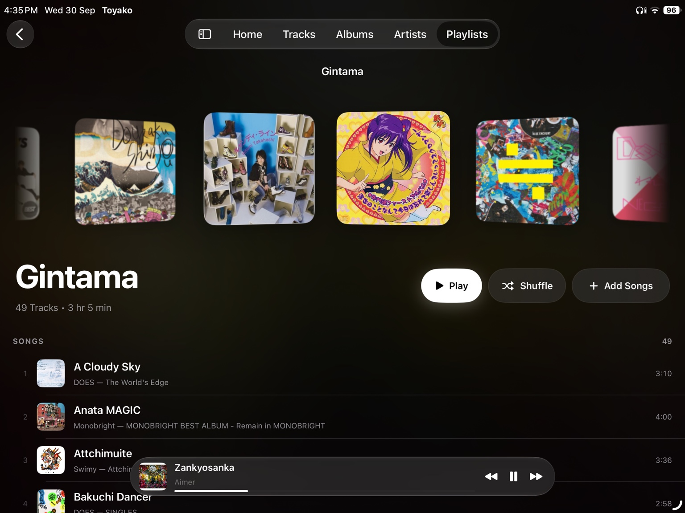

01
Your library, at a glance.
Move naturally between Home, Tracks, Albums, Artists and Playlists. Your collection stays easy to browse even when it gets big.

Toyako is a focused music player for the library you already own. Browse, play, organize and read lyrics in a native iPad experience built around your music — not a streaming service.


The Toyako experience
A clean library, powerful organization and an immersive player — designed as one consistent experience.
Move naturally between Home, Tracks, Albums, Artists and Playlists. Your collection stays easy to browse even when it gets big.

Create focused collections and keep control of what plays next.
Artwork, controls, progress and lyrics live together without getting in the way.

Background playback, queue management, shuffle, repeat and a local-first workflow keep the focus on the music.
Inside the app
Real screenshots from the iPad app. No mockups — just the interface you'll actually use.



A better way to follow along
Timed lyrics become part of the Now Playing experience. Toyako supports LRC and TTML, including Japanese karaoke-style spans and romaji.
Why Toyako
No streaming catalog to navigate. No cloud library to manage. Just a focused player for the music you keep.
Your collection is the center of the experience.
Listen without depending on a network connection.
Designed around iPad layouts, gestures and multitasking.
Latest release
Download the latest Toyako IPA from your GitHub release.
Download latest IPA ↓